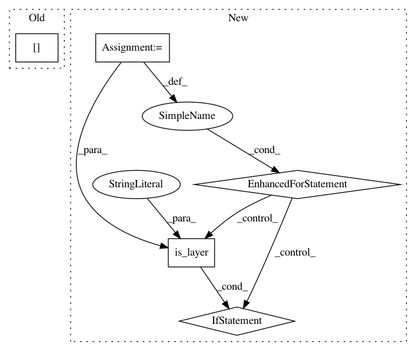

68f81a02c0bef03ba40959580b2415750d2e7f87,autokeras/net_transformer.py,,to_wider_graph,#Any#,8
Before Change
if len(weighted_layer_ids) <= 1:
target_id = weighted_layer_ids[0]
else:
target_id = weighted_layer_ids[randint(0, len(weighted_layer_ids) - 1)]
if is_layer(graph.layer_list[target_id], "Conv"):
n_add = graph.layer_list[target_id].filters
else:
After Change
n_wider_layer = randint(1, len(weighted_layer_ids))
wider_layers = sample(weighted_layer_ids, n_wider_layer)
for layer_id in wider_layers:
layer = graph.layer_list[layer_id]
if is_layer(layer, "Conv"):
n_add = layer.filters
else:
n_add = layer.units
graph.to_wider_model(layer_id, n_add)
return graph
def to_skip_connection_graph(graph):
In pattern: SUPERPATTERN
Frequency: 4
Non-data size: 5
Instances
Project Name: keras-team/autokeras
Commit Name: 68f81a02c0bef03ba40959580b2415750d2e7f87
Time: 2018-08-06
Author: jhfjhfj1@gmail.com
File Name: autokeras/net_transformer.py
Class Name:
Method Name: to_wider_graph
Project Name: keras-team/autokeras
Commit Name: 21994919156aac15558f77555538346fb702bcbc
Time: 2018-11-26
Author: jhfjhfj1@gmail.com
File Name: autokeras/nn/graph.py
Class Name: Graph
Method Name: deep_layer_ids